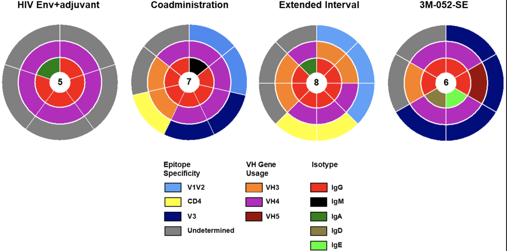

Gonomics: uniting high performance and readability for genomics with Go
Bioinformatics, 2023
PDFEric H. Au*, Christiana Fauci*, Yanting Luo*, Riley J. Mangan*, Daniel A. Snellings*, Chelsea R. Shoben, Seth Weaver, Shae K. Simpson, and Craig B. Lowe
*Co-first author
Adaptive sequence divergence forged new neurodevelopmental enhancers in humans
Cell, 2022
PDFRiley J. Mangan, Fernando C. Alsina, Federica Mosti, Jesus Emiliano Sotelo-Fonseca, Daniel A. Snellings, Eric H. Au, Juliana Carvalho, Laya Sathyan, Graham D. Johnson, Timothy E. Reddy, Debra L. Silver, and Craig B. Lowe
Leveraging antigenic seniority for maternal vaccination to prevent mother-to-child transmission of HIV-1
NPJ Vaccines, 2022
PDFAshley N. Nelson, Maria Dennis, Jesse F. Mangold, Katherine Li, Pooja T. Saha, Kenneth Cronin, Kaitlyn A. Cross, Amit Kumar, Riley J. Mangan, George M. Shaw, Katharine J. Bar, Barton Haynes, Anthony M. Moody, S. Munir Alam, Justin Pollara, Michael G. Hudgens, Koen K. A. Van Rompay, Kristina De Paris, and Sallie R. Permar
Different adjuvanted pediatric HIV envelope vaccines induced distinct plasma antibody responses despite similar B cell receptor repertoires in infant rhesus macaques
PLOS ONE, 2021
PDF
Stella J. Berendam, Papa K. Morgan-Asiedu, Riley J. Mangan, Shuk Hang Li, Holly Heimsath, Kan Luo, Alan D. Curtis, II, Joshua A. Eudailey, Christopher B. Fox, Mark A. Tomai, Bonnie Phillips, Hannah L. Itell, Erika Kunz, Michael Hudgens, Kenneth Cronin, Kevin Wiehe, S. Munir Alam, Koen K. A. Van Rompay, Kristina De Paris, Sallie R. Permar, M. Anthony Moody, Genevieve G. Fouda
Systemic and mucosal levels of lactoferrin in very low birth weight infants supplemented with bovine lactoferrin
Biochem Cell Biol., 2021
PDF
Hannah L. Itell, Andrew Berenz, Riley J. Mangan, Sallie R. Permar, and David A. Kaufman
Maternal Broadly Neutralizing Antibodies Can Select for Neutralization-Resistant, Infant-Transmitted/Founder HIV Variants
mBio, 2020
PDF
David R. Martinez, Joshua J. Tu, Amit Kumar, Jesse F. Mangold, Riley J. Mangan, Ria Goswami, Elena E. Giorgi, Juilin Chen, Michael Mengual, Ayooluwa O. Douglas, Holly Heimsath, Kevin O. Saunders, Nathan I. Nicely, Joshua Eudailey, Giovanna Hernandez, Papa Kwadwo Morgan-Asiedu, Kevin Wiehe, Barton F. Haynes, M. Anthony Moody, Celia LaBranche, David C. Montefiori, Feng Gao, Sallie R. Permar
Analytical Treatment Interruption after Short-Term Antiretroviral Therapy in a Postnatally Simian-Human Immunodeficiency Virus-Infected Infant Rhesus Macaque Model
mBio, 2019
PDF
Ria Goswami, Ashley N. Nelson, Joshua J. Tu, Maria Dennis, Liqi Feng, Amit Kumar, Jesse Mangold, Riley J. Mangan, Cameron Mattingly, Alan D. Curtis II, Veronica Obregon-Perko, Maud Mavigner, Justin Pollara, George M. Shaw, Katharine J. Bar, Ann Chahroudi,Kristina De Paris, Cliburn Chan, Koen K. A. Van Rompay, Sallie R. Permar
Simian-Human Immunodeficiency Virus SHIV.CH505-Infected Infant and Adult Rhesus Macaques Exhibit Similar Env-Specific Antibody Kinetics, despite Distinct T-Follicular Helper and Germinal Center B Cell Landscapes
J Virol, 2019
PDFAshley N. Nelson, Ria Goswami, Maria Dennis, Joshua Tu, Riley J. Mangan, Pooja T. Saha, Derek W. Cain, Alan D. Curtis, Xiaoying Shen, George M. Shaw, Katharine Bar, Michael Hudgens, Justin Pollara, Kristina De Paris, Koen K. A. Van Rompay, Sallie R. Permar
Determinants of Tenascin-C and HIV-1 envelope binding and neutralization
J Mucosal Immunology, 2019
PDF
Riley J. Mangan, Lisa Stamper, Tomoo Ohashi, Joshua A. Eudailey, Eden P. Go, Frederick H. Jaeger, Hannah L. Itell, Brian E. Watts, Genevieve G. Fouda, Harold P. Erickson, S. Munir Alam, Heather Desaire and Sallie R. Permar
A conserved retromer-independent function for RAB-6.2 in C. elegans epidermis integrity
Journal of Cell Science, 2019
PDFJonathan D. Kim, Andy Y. Chun, Riley J. Mangan, George Brown, Bruno Mourao Pacheco, Hannah Doyle, Austin Leonard and Rachid El Bejjani
Predominant envelope variable loop 2-specifc and gp120-specifc antibody-dependent cellular cytotoxicity antibody responses in acutely SIV-infected African green monkeys
Retrovirology, 2018
PDFQuang N. Nguyen, David R. Martinez, Jonathon E. Himes, R. Whitney Edwards, Qifeng Han, Amit Kumar, Riley Mangan,, Nathan I. Nicely, Guanhua Xie, Nathan Vandergrift, Xiaoying Shen, Justin Pollara, and Sallie R. Permar
Polyclonal HIV envelope-specific breast milk antibodies limit founder SHIV acquisition and cell-associated virus loads in infant rhesus monkeys
Mucosal Immunology, 2018
PDF
Jonathon E. Himes, Ria Goswami, Riley J. Mangan, Amit Kumar, Thomas L. Jeffries Jr., Joshua A. Eudailey, Holly Heimsath, Quang N. Nguyen, Justin Pollara, Celia LaBranche, Meng Chen, Nathan A. Vandergrift, James W. Peacock, Faith Schiro, Cecily Midkiff, Guido Ferrari, David C. Montefiori, Xavier Alvarez Hernandez, Pyone Pyone Aye and Sallie R. Permar
TGFβ engages MEK/ERK to differentially regulate benign and malignant pancreas cell function
Oncogene, 2017
PDFDR Principe, AM Diaz, C Torres, RJ Mangan, B DeCant, R McKinney, M-S Tsao, A Lowy, HG Munshi, B Jung, and PJ Grippo
Loss of TGFβ signaling promotes colon cancer progression and tumor-associated inflammation
Oncotarget, 2017
PDFDaniel R. Principe, Brian DeCant, Jonas Staudacher, Dominic Vitello, Riley J. Mangan, Elizabeth A. Wayne, Emman Mascariñas, Andrew M. Diaz, Jessica Bauer, Ronald D. McKinney, Khashayarsha Khazaie, Boris Pasche, David W. Dawson, Hidayatullah G. Munshi, Paul J. Grippo, and Barbara Jung
PEDF inhibits pancreatic tumorigenesis by attenuating the fibro-inflammatory reaction
Oncotarget, 2016
PDFDaniel R. Principe, Brian DeCant, Andrew M. Diaz, Riley J. Mangan, Rosa Hwang, Andrew Lowy, Brandon B. Shetuni, Bharath K. Sreekumar, Chuhan Chung, David J. Bentrem, Hidayatullah G. Munshi, Barbara Jung, Paul J. Grippo, Faraz Bishehsari